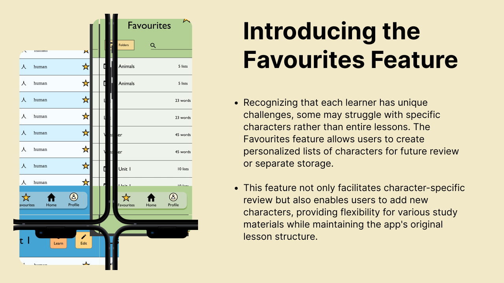

Simple Hanzi
Chinese character learning through association
Research, as well as my own experience, highlights that learning Chinese
characters is one of the most challenging aspects of studying the language for non-native speakers.
In my Bachelor's thesis, I explored this issue by focusing on associative learning techniques for students from alphabet-based
language backgrounds. I proposed a new learning technique—combining several established methods—designed specifically for digital environments. I then conducted an experiment to evaluate its effectiveness in comparison to traditional approaches.
Purpose of the prototype:
I conducted a laboratory experiment using the interactive high-fidelity prototype of the application, involving three groups of ten participants each, all with no prior experience in l earning Chinese characters. The experiment compared three different learning techniques: the traditional method of repetitive copying, learning characters by their components, and an associative learning method. The associative method, deomstrated via a version of this prtotype, was significantly more effective than the other techniques, particularly in terms of long-term retention.The prototype below offers a partial preview, showcasing one card as an illustrative example.
Problem 📌
Learning to recognize, and especially to write, Chinese characters is widely
recognized as one of the most challenging parts of studying the language for foreigners.
Yet, the traditional method of repetitive writing is still commonly used in universities and
language courses, despite its limited effectiveness among non-native learners, particularly adults.
Chinese characters, though complex, are not without structure and logic. I believe that, with the right
techniques, learners can tap into their imagination and identify meaningful patterns within characters. This
approach can transform the perceived complexity of Chinese characters from a burden into a source of beauty, making
character study a more engaging and inspiring process.
Process 🔄
Testing learning apps and studying academic literature
During the discover phase, I explored various learning apps such as Chineasy, Anki, and Quizlet to gather useful design insights and identify areas for improvement. I also reviewed academic literature on character teaching, learning techniques, associative learning, and technology-enhanced learning methods, which helped inform the core methodology of my app.
Preparing sketches
Having solidified the core idea for the learning method, I proceeded to sketch out the essential features and user flows of the app.
The specific sketch presented here is the culmination of multiple rounds of tweaking and refining.
Collaborating with Experts
After finalizing my initial sketches, I collaborated with Chinese teachers and a university professor specializing in learning methodology to discuss my proposed learning method and the low-fidelity prototype of the app. Their professional insights were invaluable and led to several adjustments in my design.
One of the main features I added based on the opinion of experts:

User testing
I conducted multiple rounds of user testing, both on the low-fidelity and the high-fidelity prototype. Both my fellow students in the Chinese department and beginner language learners were involved. I employed the think aloud method as I believed it allowed me to understand the user behaviour more effectively. I have also asked follow-up questions after each session, which helped me to identify further areas of improvement. The user testing yielded invaluable insights and identified pain points. This iterative process enabled me to revisit and enhance the prototype based on the valuable feedback received from users.
Improving flashcard interaction
Solution 💡
After examining other character learning apps and techniques, I worked closely with teachers and learning experts to design an interface that facilitates the learning progress of characters.Here are a few main features:
UI decisions
- Glassmorphic design
- Hand-drawn menu page
The glass morph effect is currently popular, and I believe it could be seamlessly
incorporated into the design of this app. This effect allows for the implementation of colorful backgrounds
while ensuring legibility, creating a modern yet playful user interface.
The menu page, with its almost childish appearance, not only establishes a playful and creative tone for
the application but also incorporates Chinese characters into objects associated with their meanings.
I believe that this distinctive interface plays a pivotal role in fostering a relaxed and open mindset for users,
setting the stage for a positive learning experience as they begin their session.